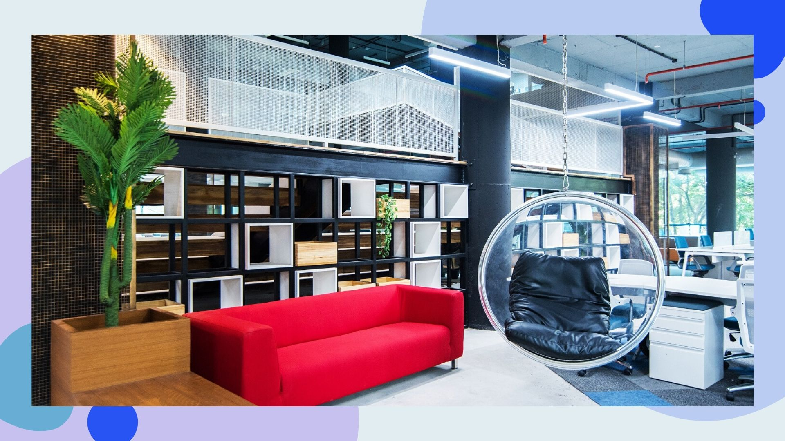
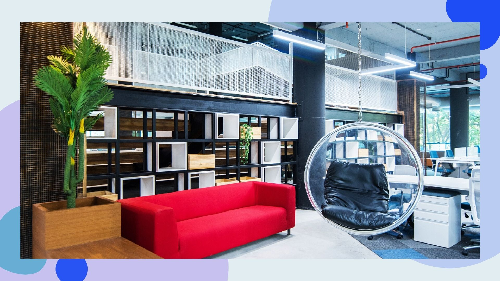
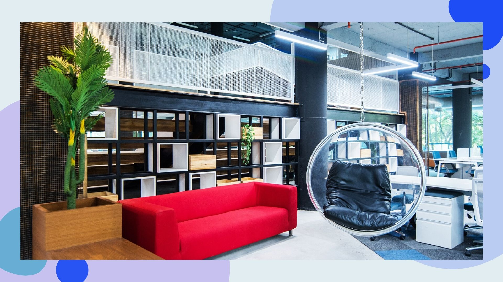

Job Description: We are looking for someone who is passionate about software engineering, REST, API best practice, enjoys sharing knowledge and working closely with development teams, and values testing and reproducibility, as well as figuring out the best way to build systems that are maintainable and easy to comprehend.
Skills & Experience Required:
1. Golang, Experience with creating APIs / microservices, experience working on Linux Environment
2. Solid knowledge and experience of using Kubernetes and Docker on production environment over AWS/GCP/Azure etc.
3. Working within a cross-functional agile product team to deliver incremental changes in a continuous delivery environment.
4. Ability to write self-documenting code using a test and behavior-driven approach, that adheres to SOLID principles.
Job Location: Gachibowli, Hyderabad, India
HOW TO APPLY
Send your latest resume at shyam@codecrux.com with following
Total Exp -
Relevant Exp. -
Official Notice Period -
Current CTC -
Expected CTC -
